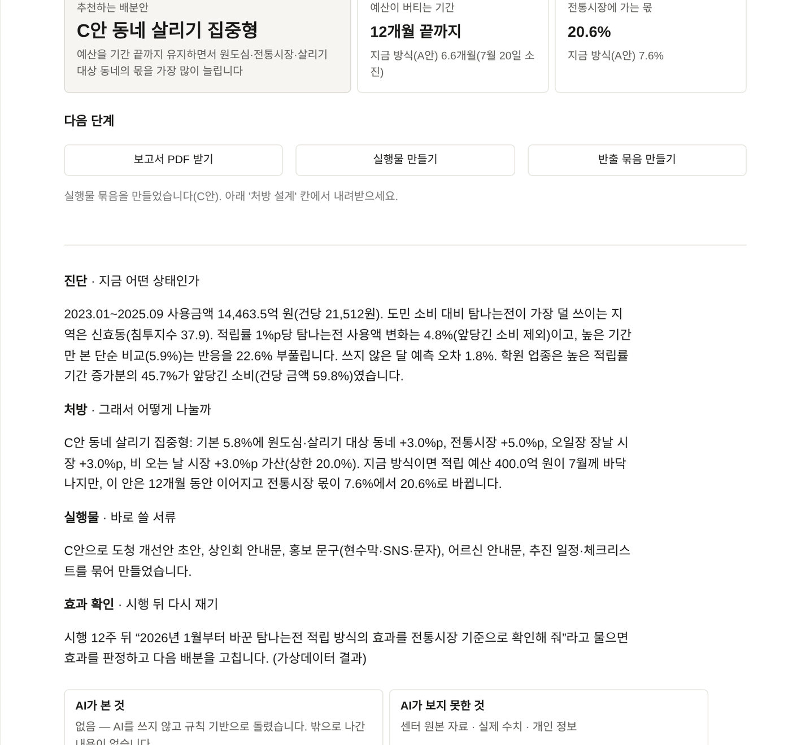
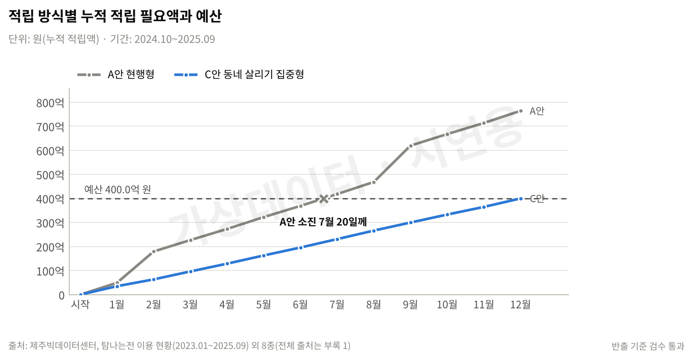
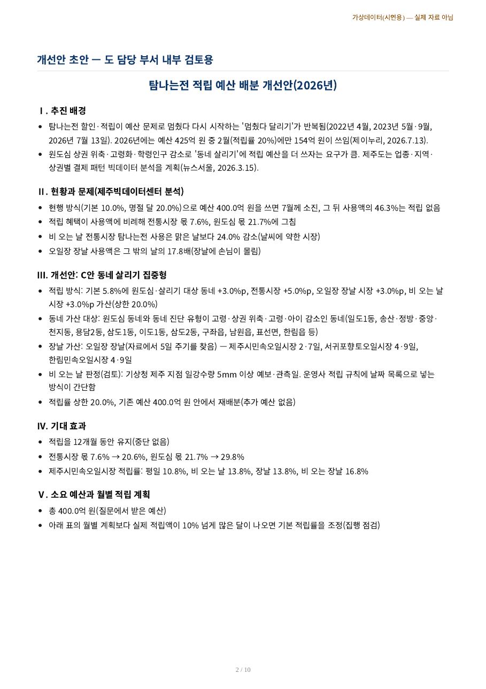
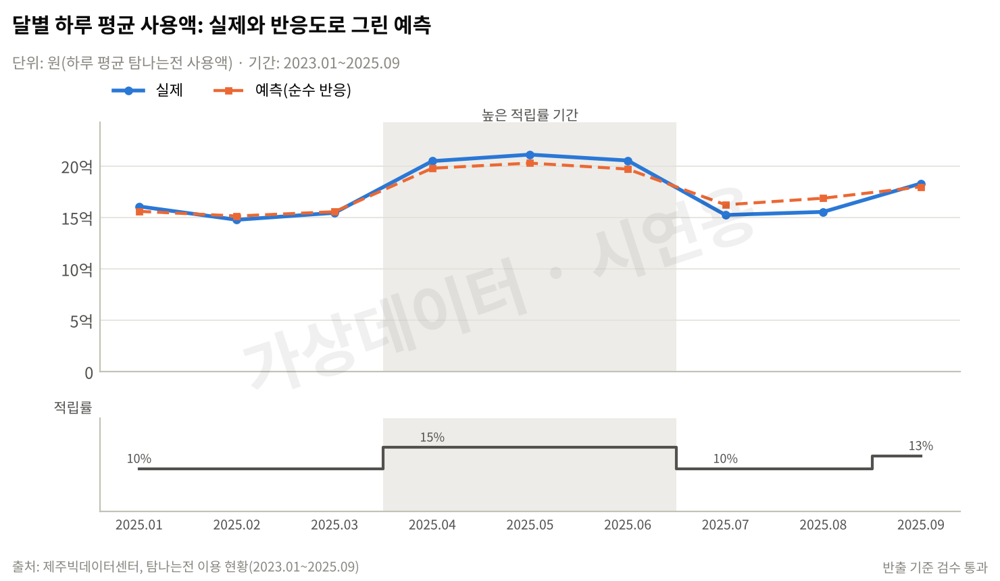
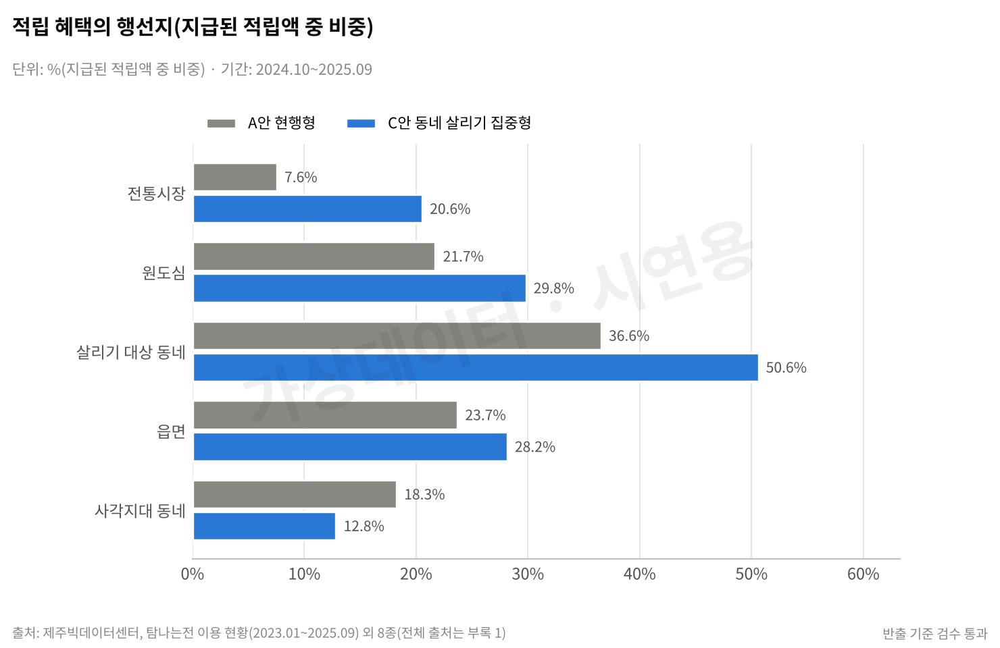
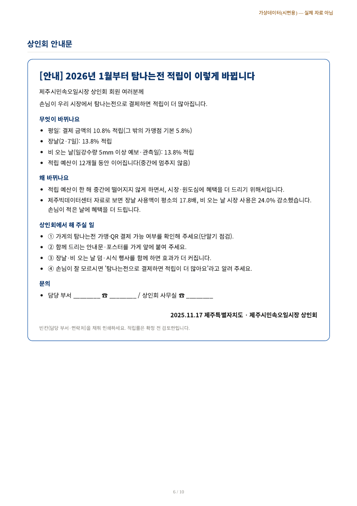
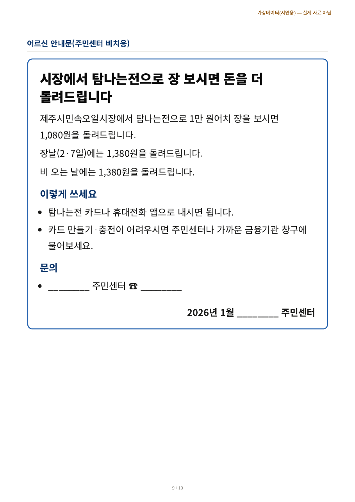

2026년 캐시백 예산 425억 원 중 154억 원을 20% 적립한 2월 한 달에 쓰고 7월 13일 적립이 멈췄습니다(추경 266억 5천만 원으로 8월 7일 재개). 중단 전후 일주일 사용액은 57.9% 줄었습니다. 2024년 12월에도 11일간 멈췄고(예비비 10억 원), 2022년 4월, 2023년 5월·9월에도 멈췄습니다.
적립률을 1%p 올릴 때 사용액이 느는 폭입니다. 도 발표만 봐도 같은 7→10%가 +15.7%(2025.1)와 +21.6%(2025.3)로 다르고, 7→14%(추석·한도 확대)는 +39.2%. 1%p당으로 바꾸면 5.0%·6.7%·4.8%, 도청이 공개한 월별 사용액으로 직접 재면 2.9~9.1%. 잴 때마다 다르고, 무엇이 섞였는지 모릅니다.
15%·월 200만 원 한도 때 학원·교육 비중을 도는 4월 한 달 기준 12.2%로 "쏠림은 없었다"고 발표했고, 언론은 1년 새 13.3 → 18.2%로 올랐으며 학원비를 몇 달치 미리 낸 사례가 있다고 보도했습니다. 미리 낸 돈은 새 소비가 아니라 시기만 당긴 소비인데, 월 합계로는 가를 수 없습니다.
| 질문 | 답 |
|---|---|
| ① 해결하려는 문제 | 정해진 캐시백 예산이 한 해 중간에 끊기고, 늘어난 사용이 진짜 새 소비인지 몰라 적립률을 근거 없이 정함 |
| ② 누가 겪나 | 적립률을 정하는 도 지역화폐 담당, 적립 중단 때 손님이 끊기는 전통시장·원도심 상인, 갑자기 혜택이 사라지는 도민 |
| ③ 풀면 누가 무엇을 얻나 | 도: 같은 예산으로 1년 유지·예측 가능한 집행 / 상인: 끊기지 않는 손님, 전통시장 몫 증가 / 도민: 연중 같은 혜택 |
| ④ 역진·사각지대 심화 여지 | 있음 → 직접 잽니다: 학원·교육 업종 몫, 고령 동네 주민 1인당 적립액 ÷ 그 밖의 동네, 사각지대 동네 몫. E안(쏠림 방지)·D안(사각지대)으로 줄임 |
| ⑤ 주어진 자료로 가능한가 | 1-32(일×동네×업종×시장, 2023.1~2025.9) 안에 적립률이 바뀐 자연실험(2024.6 7%, 추석 14%, 10월~ 10%, 2025.4~6 15%, 9월 13%)이 들어 있음 → 정량 추정·백테스트 가능 |
| ⑥ 돈·시간으로 기대효과 | 예산 소진일(개월), 전통시장·원도심으로 가는 적립액(원·%), 학원·교육 쏠림(%p), 반응 착시로 잘못 볼 소진일 차이(현행 반응 무시 시 8월 19일 vs 반영 7월 20일) |
| 목표 | 측정 방법(현재 결과, 가상데이터) |
|---|---|
| 질문 하나로 끝까지 | 진단 → 효과 추정 → 설계 → 실행물 → 효과 확인(보고서 18쪽 + 실행물 10쪽 안팎, PC에 따라 20~40초, AI 없이도 동작) |
| 반응을 '재서' 쓴다 | 적립률 1%p당 순수 반응 4.8%(95% 구간 4.2~5.3%, 심어 둔 정답 4.6%), 흔한 방식 5.9%(22.6% 부풀림) — 자동 테스트로 정답 복원 확인 |
| 예측이 맞는지 보여 준다 | 추정에 쓰지 않은 2025년 9월(작년 12.1% → 13%) 예측 오차 1.8%(흔한 방식 5.9%) |
| 같은 예산을 끝까지, 필요한 곳에 | 현행 7월 20일 소진 → C안 12개월 유지, 전통시장 몫 7.6% → 20.6%, 고령 동네 1인당 적립액 1.4배 → 2.2배(인구는 공식 주민등록 통계) |
| 쏠림을 줄인다 | E안: 학원·교육 업종 몫 11.2% → 6.5%, 1년 유지, 전통시장 몫 21.0%(C안 20.6%와 비슷) |
| 밖으로 새는 것 0 | 외부 AI로 센터 수치 0건 + 센터 데이터에서 나온 이름·판정·문장 0건(토큰화), 반출 검수 10 미만·역산 0건 자동 점검 |
| 센터에 바로 탑재 | 설치.bat/실행.bat, 고정 버전 패키지, 127.0.0.1 전용, 결과 자동 삭제 설정, 관리자 PIN, 질문 계획 50문항 100% |
'400억 원'은 이 PC가 질문에서 읽고 AI에는 [수치]로 보냅니다. 필요한 파일이 없으면 운영자에게 보낼 '여러 달 치 사전 다운로드 요청' 문안을 만들어 줍니다. 같은 엔진으로 동네 현황자료, 창업 시장분석, 사건·정책 전후 효과, 자유 질문에도 답해, 도청 담당자뿐 아니라 센터를 찾는 기관·소상공인·연구자도 씁니다.
| 항목 | 값 |
|---|---|
| 순수 반응(앞당긴 소비 제외) | 1%p당 +4.8% |
| 95% 신뢰구간 | 4.2 ~ 5.3% |
| 흔한 방식(15% 기간만 작년과 비교) | 1%p당 +5.9% |
| 백테스트 2025.9 (작년 12.1% → 13%) | 오차 1.8% (흔한 방식 5.9%) |
| 학원: 15% 기간 증가분 중 앞당긴 소비 | 45.7% (건당 +59.8%) |
| 학원·교육 사용액 비중 | 11.6% → 15.5% |
도 발표 반응(1%p당 6.7%·4.8%)과도 함께 표시해 실데이터에서 크기를 견줍니다.

| 안 | 적립률 | 유지 | 전통시장 몫 | 학원·교육 몫 | 고령 동네 혜택 |
|---|---|---|---|---|---|
| A 현행 | 10%·명절 20% | 7/20 소진 | 7.6% | 11.2% | 1.4배 |
| B 균등 | 모두 7.8% | 12개월 | 7.6% | 11.0% | 1.4배 |
| C 집중 ★ | 5.8% + 가산 | 12개월 | 20.6% | 9.4% | 2.2배 |
| D 사각지대 | 6.7% + 5%p | 12개월 | 6.2% | 11.2% | 1.1배 |
| E 쏠림 방지 | 6.0% + 가산·상한 | 12개월 | 21.0% | 6.5% | 2.2배 |
C 가산: 원도심·살리기 대상 동네 +3%p, 전통시장 +5%p, 장날·비 오는 날 시장 각 +3%p(상한 20%). E는 C에 건당 적립 1만 원 상한을 두고 학원·교육은 기본률만 줍니다. 기본률은 예산을 끝까지 쓰도록 자동으로 맞춥니다. 고령 동네 혜택 = 고령 동네 주민 1인당 적립액 ÷ 그 밖의 동네(가맹점이 있는 동네 기준, 인구는 행정안전부 주민등록 통계 2026년 10월).



8종: 한 장 요약 · 도청 개선안 초안(월별 적립 계획) · 대안 비교표 · 상인회 안내문 · 홍보 문구(현수막·SNS·문자) · 어르신 안내문 · 추진 일정·체크리스트 · 효과 확인 질문.
⑤ 효과 확인: 다음 방문 때 붙여 넣을 질문 "2026년 1월부터 바꾼 탐나는전 적립 방식의 효과를 전통시장 기준으로 확인해 줘"를 만들어 둡니다. 그 질문이 들어오면 전통시장과 일반 가맹점의 전후 차이를 주 단위로 견주고(이중차분), 우연히 나온 차이가 아닌지 가짜 시작일로 다시 계산해(위약 검정) 판정한 뒤 다음 배분(C′안)을 다시 계산합니다. 동네 하나를 물으면(예: 일도1동) 맨 앞에 동네 진단 카드가 붙습니다.
| 업종(가상) | 15% 기간 증가 | 그중 순수 반응 | 뒤 두 달 빈자리 | 증가분 중 앞당긴 소비 | 건당 금액 | 판정 |
|---|---|---|---|---|---|---|
| 일반음식점 | +53.1% | +54.2% | 0.2% | 0.3% | 0.0% | - |
| 슈퍼마켓·마트 | +53.2% | +54.2% | 0.1% | 0.2% | 0.0% | - |
| 학원 | +114.0% | +54.3% | 60.6% | 45.7% | +59.8% | 앞당긴 소비 |
| 농축수산물 | +56.6% | +54.3% | −3.2% | 0.0% | −0.3% | - |
증가는 '적립률이 작년과 같았다면'과 견준 값입니다. '뒤 두 달 빈자리'는 뒤 두 달 사용액이 예측보다 빠진 비율, '증가분 중 앞당긴 소비'는 15% 기간에 늘어난 금액 가운데 뒤에서 빠진 몫입니다. 판정 규칙(업종 이름을 코드에 넣지 않음): 증가분의 30% 이상이 뒤 두 달에서 빠지고 건당 금액이 20% 이상 오르면 '앞당긴 소비 의심'. 실데이터의 업종 이름이 무엇이든 같은 규칙으로 찾습니다. 시뮬레이션에 쓸 '기준 1년'은 먼저 "적립률이 10%였다면"으로 되돌린 뒤(앞당긴 소비 업종은 부풀림과 빈자리를 걷어 냄), 적립 방식마다 적립률이 1%p 다를 때마다 잰 반응만큼 사용액을 늘리거나 줄입니다.
| 단계 | 처리 |
|---|---|
| 기준 1년 | 날짜×동네(행정동 40곳)×가맹점 구분×시장×업종별 사용액(10건 미만 칸 제외). 장날(5일 주기 자동 탐지)·비 온 날(5mm)·명절 달 꼬리표 |
| 적립 방식 | A 현행(10%, 명절 달 20%) · B 균등 · C 동네 살리기 집중 · D 사각지대 보강(+5%p) · E 쏠림 방지(C + 건당 1만 원 상한 + 학원·교육 기본률만), 상한 20%. 효과 확인 뒤 C′ |
| 예산·기본률 | 예산은 질문 값(없으면 2026년 비율 425억 ÷ 6,800억 = 6.25%를 자료에 적용). B~E 기본률은 반응을 넣은 채로 예산을 기간 끝까지 쓰도록 자동으로 맞춤 |
| 소진일·행선지 | 날짜 순서로 적립액을 쌓아 예산을 넘는 날 = 소진일. 지급된 적립액 중 원도심·전통시장·대상 동네·사각지대·학원·교육·질문한 동네 몫 |
| 역진성 | ① 학원·교육 업종 몫(사교육비는 소득이 높은 가구가 더 씀) ② 고령 동네(고령화율 중앙값 이상) 주민 1인당 적립액 ÷ 그 밖의 동네(야간 거주인구 기준) ③ 사각지대 동네 몫. 누가 썼는지는 자료에 없어 업종·동네 단위 대리지표로 명시 |
| 추천 | 질문의 우선순위(원도심·시장=C, 사각지대=D, 고르게=B, 쏠림·선결제·역진=E, 지금 방식=A), 없으면 동네 진단에 맞춤. 추천 이유를 문장으로 |
| 이 PC 안의 원문 | 외부 AI가 받는 것 | 왜 가리나 |
|---|---|---|
| 사각지대 1위 신효동 침투지수 | 사각지대 1위 {{t33}} 침투지수 {{f11}} | 어느 동네가 1위인지 = 조회 결과 |
| 사용금액: 가장 높은 연월(2025년 8월) | 가장 높은 연월({{t29}}) | 순위 항목도 센터 값 |
| '고령·상권 위축' 유형: 추자면, 일도1동… | '고령·상권 위축': {{t17}} | 유형 판정은 센터 임계값으로 나옴, 몇 곳인지도 가림 |
| "비 오는 날 전통시장 사용이 줄어듭니다" | {{t9}}(문장 통째) | 방향 단어 = 센터 데이터의 부호 |
| 추천: C안 · 추천 이유 · 끝까지 유지: 예 | 추천 {{t26}} · 이유 {{t27}} · 유지 {{t24}} | 값이 같아도 매번 새 토큰(같다는 사실도 숨김) |
질문에 이미 있는 말(예: 질문한 '일도1동')은 그대로 둡니다. 센터 답변(11/10: "질문 문장 속 센터 값도 외부 전송으로 본다", "집계표라도 외부 AI 전송은 사전 승인 없음")에 맞춰 수치 0건뿐 아니라 센터 데이터에서 나온 정보 0건을 기본으로 했습니다. 감사 로그에 보낸 원문과 가린 토큰 수를 남기고, 자동 테스트가 동네·시장·업종·요일 이름, 추천 이유, 단위 붙은 수치가 하나라도 나가면 실패합니다.
| 구분 | 내용 |
|---|---|
| 모델 | Claude Haiku 5.5(claude-haiku-5-5, 기본·저비용, Messages API 도구 사용) / 선택: Claude Sonnet 5.5, OpenAI, Gemini(같은 도구를 JSON 행동으로) / 로컬 Ollama(외부 전송 없음) / AI 없음(규칙 기반, 모든 기능 동작) |
| Tool | check_data(불러온 데이터·모자란 데이터) · run_course(캐시백 설계·전후 효과·현황·창업, 범위·동네·정책 월, 우선순위 goal) · make_action_pack(고른 안 → 실행물) · run_analysis(자유 집계) · finish(토큰·자리표시자 답) |
| 자율 범위 | AI: 코스·범위·우선순위·실행물 안·강조점·답 / 엔진: 데이터 판별, 반응 추정, 앞당긴 소비 판정, 기본률 계산, 추천 규칙, AI 답 폐기 / 이용자: 예산·기간 확인, 실행물 확정 전 검토, 반출 신청 / 관리자(PIN): AI 키·전송 레벨·삭제 설정 |
| 남성 | 여성 | 알수없음 | 합계 | |
|---|---|---|---|---|
| 19세 이하 | x | 144 | x | 241 |
| 20대 | 1,666 | 2,051 | 81 | 3,798 |
| 70세 이상 | x | 240 | x | 385 |
x 1차(10 미만) · x 2차(합계 − 나머지로 다시 계산되는 칸 차단). 정보 손실이 가장 적은 칸만 더 가립니다.
| 데이터(센터 명세서 v13) | 쓰는 항목 | 처리·이용 조건 |
|---|---|---|
| 1-32 탐나는전 이용 현황 | 승인일자, 우편번호, 업종·표준업종, 금액, 건수, 읍면동, 전통시장 | 센터 전용·반출 불가 → 집계만. 2023.1~2025.9를 운영자에게 미리 요청('요청파일' 폴더). 업종×달 하루 평균으로 반응 추정, 날짜×동네×시장×업종으로 기준 1년. 10건 미만 칸 제외 |
| 적립률 이력(보도·도 보도자료 확인) | 달별 적립률·월 한도·출처 | 2024.1~5 5%(5억 초과 3%), 6월~ 7%, 8.26~9.22 14%(한도 100만), 10월~ 10%, 2025.4~6 15%(한도 200만), 7~8 10%, 9월~ 13% — 경향신문 2024.5.28, 한국일보 2024.8.23, 헤드라인제주 2024.9.29, 제주도 보도자료 2024.12.20·2025.1.31, 한라일보 2025.3.12 등. 2023년은 현장 할인이라 추정에서 제외. 공식 이력은 data\rates.csv로 교체 |
| 1-08 카드 이용 현황(읍면동) | 법정동, 업종, 관광구분, 연령, 이용자수·금액 | 침투지수(탐나는전 ÷ 도민 카드 소비)로 사각지대, 원도심 상권 흐름 |
| 주민등록 인구통계(행정안전부, 공개) | 읍면동별 총 거주자수, 5세 단위 연령 | 공개 실데이터. 2026년 10월 제주시·서귀포시 43개 읍면동 → 고령화율(65세 이상 ÷ 총인구)로 고령 동네 판정, 1인당 적립액의 분모. 발췌값을 프로그램에 넣어 두었고(spec/data/public_pop.json), 새 달 엑셀을 받아 tools/build_public_pop.py로 교체 |
| 4-10 / 4-11 유동인구(거주인구) | 행정동, 5세 연령, 거주 인구 | 새벽 거주인구로 동네 유형(고령·아이 감소) 판정, 인구 변화. 공식 인구 발췌가 없을 때 1인당 계산의 대체 분모 |
| 5-02 일일 날씨 | 날짜, 관측소, 강수 | 비 온 날 효과(5mm 이상) → 비 오는 날 시장 가산 |
| 1-12·1-14·1-17·1-19~24 | 요일·시간대·매장·POS | 보조 코스(현황·창업)용 |
| 자료 | 확인한 사실 |
|---|---|
| 행정안전부 주민등록 인구통계 (2026년 10월, 읍면동 43곳) | 제주 주민 65만 8,549명 중 65세 이상 20.9%. 읍면동별로 12.2%(아라동)~42.2%(추자면)로 3배 넘게 차이 → 고령 동네 판정과 주민 1인당 적립액 계산에 이 통계를 그대로 씁니다 |
| 제주특별자치도_탐나는전 가맹점 데이터 (공공데이터포털, 2026.3.31 기준, 48,081곳) | 교육 계열 업종(입시/교습학원·외국어·예술·기술 교육 등)은 2,717곳으로 가맹점의 5.7%. 주민 1천 명당 교육 가맹점은 동 지역 4.8곳, 읍면 2.4곳으로 2배 차이. 전체 가맹점은 동 74.3곳·읍면 69.3곳으로 비슷 → 가맹점 수가 아니라 업종이 혜택 쏠림을 만듭니다 |
| 탐나는전 월별 판매액·사용액 현황 (제주특별자치도 누리집, 2023.1~2026.6 중 35개월) | 적립률이 바뀐 때의 하루 평균 사용액을 앞뒤와 견주면 1%p당 2.9~9.1%: 2024.6(5→7%) 2.9~8.0%, 2024 추석(→14%) 7.3%, 2024.10(→10%) 2.9%, 2026.2(→20%) 4.1~9.1%. 비교 기간을 어떻게 잡느냐에 따라 세 배까지 달라지고, 월 합계로는 명절·앞당긴 소비를 가를 수 없습니다 → 업종×날짜 자료(1-32)로 재야 하는 이유. 가상데이터에 심은 4.6%는 이 범위 안입니다(tools\public_usage_check.py로 재현) |
| 자료에 없음 | 대신 |
|---|---|
| 누가 썼나(나이·소득·도민 여부) | 업종(학원·교육) 몫과 동네(고령 비율) 단위 1인당 적립액으로 역진성을 대리 측정, 보고서에 '대리지표' 명시 |
| 1인 월 적립 한도 효과 | 한도가 함께 바뀐 기간(2025.4~6 200만 원)은 반응에 섞일 수 있음을 한계로 명시, E안의 건당 상한으로 고액 결제 영향만 따로 계산 |
| 같은 시기 다른 변화(정부 지원·경기) | 같은 해 다른 달로 업종 성장을 걷어 내고, 추정에 쓰지 않은 달의 백테스트로 확인 |
| 가상 세계에 심은 것 | 분석이 찾은 것 |
|---|---|
| 적립률 1%p당 사용액 +4.6%, 보도된 적립률 이력 그대로 | +4.8%(구간 4.2~5.3%) — 흔한 방식은 +5.9% |
| 15% 기간 학원 +40%·건당 ×1.6, 뒤 두 달 −60% | 학원만 '앞당긴 소비 의심', 증가분 중 45.7%, 건당 +59.8% |
| 2025년 6월부터 전통시장 +12%(가상 정책) | 전통시장과 일반 가맹점의 전후 차이(주간 이중차분) +20.6%(p≈0.011) → '유지' 판정 → C′안. 심은 값보다 크게 나옵니다(같은 때 학원 선결제 뒤 빈자리로 일반 가맹점 사용이 줄어든 탓) — 크기가 아니라 방향·유의성으로 판정 |
| 비 오는 날 전통시장 −22%, 오일장 장날(끝자리) | 같은 달·요일 비교 −24.0%, 장날 5일 주기 자동 탐지 |
| 항목 | 검증 내용 |
|---|---|
| 자동 테스트 108개 | CSV 인식, 반출 검수(역산 공격·다리 칸), 반응 정답 복원·백테스트가 흔한 방식보다 정확한지, 예산·소진일·E안, 실행물, 에이전트 연쇄, 레벨 0 누수(이름·문장·수치), AI 답 숫자 거절 |
| 질문 계획 50문항 | 규칙 기반 계획기 100%(캐시백 설계 질문 20개 중 12개는 예산·기간·우선순위를 질문에서 바르게 읽는지까지 채점) |
| 가상데이터 생성기 | 센터 CSV 형식(헤더·큰따옴표·NA·월별 파일) 11종, 탐나는전 33개월을 약 80초에 생성 → 평가자도 센터 없이 전체 재현 |
| 근거 추적 | 모든 문장 숫자 → 사실 번호 → 표·그림 → SQL·사용 파일까지 '근거 보기', 보고서마다 검수 내역·한계 부록 |
| 항목 | 내용 |
|---|---|
| 구현 범위 | 에이전트(AI 도구 사용 + 규칙 기반), 탐나는전 캐시백 설계(진단·효과 추정·설계 A~E·C′·역진성), 실행물 묶음, 효과 확인 루프, 레벨 0 가림막, 반출 검수·신청 도우미, 보조 코스(전후 효과·현황·창업·자유 질문), 관리자 콘솔, 가상데이터 생성기 — 모두 구현함 |
| 기술 환경 | Python 3.13.17, Streamlit(127.0.0.1:8501), DuckDB+pandas+numpy, matplotlib, python-docx, pydantic. GPU 불필요, 최대 메모리 약 2GB |
| 센터 PC 적합성 | Windows 11·i7-8700·RAM 32GB 기준 설계. 캐시백 설계 보고서+실행물은 PC에 따라 20~40초. Windows 11에서 설치·실행·PDF·반출 묶음까지 확인(2026.11.20). 관리자 권한 불필요, 설치 폴더 안에서만 동작(PDF로 바꿀 때만 Windows 임시 폴더를 잠깐 사용) |
| 설치 | ① Python 3.13.17(python.org) ② 설치.bat(고정 버전 패키지) ③ 실행.bat — 비전공자용 설치·사용자 매뉴얼 |
| 결과 삭제 | 세션별 작업 폴더에만 저장, '작업 끝내기'로 통째 삭제. 자동 삭제 ON/OFF(관리자 PIN) |
| 운영 비용 | AI를 켜면 질문 1건당 Claude Haiku 5.5 호출 4~6회(도구 결과는 구조만이라 짧음). 호출 수·토큰은 관리자 화면에서 확인. AI를 꺼도 모든 기능 동작 |
| 주소 | 시점 | 보내는 내용 |
|---|---|---|
| www.python.org | 설치 1회(수동) | 없음 |
| pypi.org, files.pythonhosted.org | 설치 1회 | 없음(패키지 내려받기) |
| api.anthropic.com (선택: api.openai.com, generativelanguage.googleapis.com) | 실행 중, AI를 켠 경우 | 질문(수치 가림), 데이터·지표 이름, 절 제목, 사실 번호, 토큰 — 센터 수치·센터 데이터에서 나온 이름·문장 0건 |
data\rates.csv로 교체. 2024년 1~5월은 가맹점 매출 구간별 5%·3%를 대표값 5%로 계산합니다.| 자원 | 용도와 범위 |
|---|---|
| Claude API(Anthropic) | 실행 중 에이전트의 계획·도구 선택·답 문장, 홍보 문구 다듬기. 기본 레벨 0(수치·센터 유래 이름·문장 0건), API 키는 data\.env에 한 줄로 넣고, 키가 없으면 규칙 기반으로 같은 순서를 실행(평가용 키를 넣을 때는 사용 한도를 걸고 평가 후 폐기) |
| 개발 보조 AI | 코드 작성·문서 초안에 AI 도구를 썼고, 모든 계산은 자동 테스트와 독립 재계산으로 확인했습니다 |
| 공개 보도·자료 | 적립률 이력·도 발표 반응(경향신문·제주의소리 2024.5.28, 한국일보·스트레이트뉴스 2024.8.23, 헤드라인제주 2024.9.29, 한라일보 2025.3.12, 경향신문 2025.8.31), 예산 소진·중단 전후 사용액(제이누리 2026.3.3·7.13, 뉴스1 2026.8.3), 제주특별자치도 보도자료(2024.12.6, 2024.12.20, 2025.1.31, 2025.5.11, 2026.3.3, 2026.7.13, 2026.8.4), 탐나는전 활성화 토론회 발표 자료(이준호, 「탐나는전, AI를 만나다」, 2026.3.6), 발행 규모(뉴스서울 2026.3.15), 학원·교육 비중(중앙SUNDAY 2025.7.26), 소득별 사교육비(교육부·국가데이터처 2025년 초중고 사교육비조사, 2026.3.12 발표), 주민등록 인구통계(행정안전부, 2026년 10월), 탐나는전 가맹점 데이터(제주특별자치도, 공공데이터포털 15157894, 2026.3.31 기준, 이용허락범위 제한 없음), 탐나는전 월별 판매액 및 사용액 현황(제주특별자치도 누리집 '탐나는전 발행액 및 환전액 현황' 게시판, 2023~2026년 4개 파일), 선행연구(강주현, 「제주지역화폐 정책의 효과분석 — 탐나는전을 중심으로」, 제주대학교 행정학과 석사학위논문, 2022.8), 인구감소위험(제주연구원, JIBS 2024.2.6), 센터 데이터 명세서 v13 |
| 오픈소스 | Python, Streamlit, DuckDB, pandas, numpy, matplotlib, python-docx, pypdf, pydantic(각 라이선스 준수) |